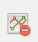
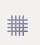
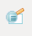
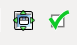

Graphical interface for MOOSE
Harsha Rani, Aviral Goel, Upinder S. Bhalla
The Moose GUI lets you work on both chemical and compartmental/electrical neuronal models using a common interface. This document describes the salient features of the GUI
The common interface layout consists of a a menu bar and two views, editor view and run view.
Menu Bar
The menu bar appears at the top of the top of the main window. In Ubuntu 12.04, the menu bar appears only when the mouse is in the top menu strip of the screen. It consists of the following options -
File
The File menu option provides the following sub options -
- New - Create a new chemical signalling model.
- Load Model - Load a chemical signalling or compartmental neuronal model from a file.
- Recently Loaded Models - List of models loaded in MOOSE.
- Connect BioModels - Load chemical signaling models from the BioModels database.
- Quit - Quit the interface.
View
View menu option provides the following sub options -
- Editor View - Switch to the editor view for editing models.
- Run View - Switch to run view for running models.
- Dock Widgets - Following dock widgets are provided -
- Python - Brings up a full fledged python interpreter integrated with MOOSE GUI. You can interact with loaded models and load new models through the PyMoose API. The entire power of python language is accessible, as well as MOOSE-specific functions and classes.
- Edit - A property editor for viewing and editing the fields of a selected object such as a pool, enzyme, function or compartment. Editable field values can be changed by clicking on them and overwriting the new values. Please be sure to press enter once the editing is complete, in order to save your changes.
- SubWindows - This allows you to tile or tabify the run and editor views.
Help
- About Moose - Version and general information about MOOSE.
- Built-in documentation - Documentation of MOOSE GUI.
- Report a bug - Directs to the SourceForge bug tracker for reporting bugs.
Editor View
The editor view provides two windows -
- Model Editor - The model editor is a workspace to edit and create models. Using click-and-drag from the icons in the menu bar, you can create model entities such as chemical pools, reactions, and so on. A click on any object brings its property editor on screen (see below). In objects that can be interconnected, a click also brings up a special arrow icon that is used to connect objects together with messages. You can move objects around within the edit window using click-and-drag. Finally, you can delete objects by selecting one or more, and then choosing the delete option from the pop-up menu.
When displaying a neuronal model, most of the editing options are disabled. However, you can still click on a dendrite in order to bring up the property editor.
- Property Editor - The property editor provides a way of viewing and editing the properties of objects selected in the model editor.
The Model Editor is different for chemical signalling and compartmental neuronal models. The links below the screenshots point to the details for the respective editors.
Run View
The Run view, as the name suggests, puts the GUI into a mode where the model can be simulated. As a first step in this, you can click-and-drag an object to the graph window in order to create a time-series plot for that object. For example, in a chemical reaction, you could drag a pool into the graph window and subsequent simulations will display a graph of the concentration of the pool as a function of time. Within the Run View window, the time-evolution of the simulation is displayed as an animation. For chemical kinetic models, the size of the icons for reactant pools scale to indicate concentration. For neuronal models, the colour of dendritic segments changes to indicate membrane potential. Above the Run View window, there is a special tool bar with a set of simulation controls to run the simulation.
Simulation Controls
This panel allows you to control the various aspects of the simulation.
- Run Time - Determines duration for which simulation is to run. A simulation which has already run, runs further for the specified additional period.
- Reset - Restores simulation to its initial state; re-initializes all variables to t = 0.
- Stop - This button halts an ongoing simulation.
- Current time - This reports the current simulation time.
- Preferences - Allows you to set simulation and visualization related preferences.
Visualization Widget
Plot Widget
- Toolbar - On top of plot window there is a little row of icons:
These are the plot controls. If you hover the mouse over them for a few seconds, a tooltip pops up. The icons represent the following functions:
- - Add a new plot window
- - Deletes current plot window
- - Toggle X-Y axis grid
- - Returns the plot display to its default position
- - Undoes or re-does manipulations you have done to the display.

- - The plots will pan around with the mouse when you hold the left button down. The plots will zoom with the mouse when you hold the right button down.
- - With the **
left mouse button**, this will zoom in to the specified rectangle so that the plots become bigger. With the **right mouse button**, the entire plot display will be shrunk to fit into the specified rectangle. - - You don't want to mess with these .
- - Save the plot.
- Context Menu
The context menu is enabled by right clicking on the plot window.

- Export to CSV - Exports the plotted data to CSV format
- Toggle Legend - Toggles the plot legend
- Remove - Provides a list of plotted entities. The selected entity will not be plotted.